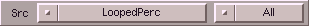

These controls are for choosing a source to operate on. The cycle gadget right to the source allows you
to choose the range which should be saved. SoundFX automatically suggests the probably most desired mode, e.g.
if you have marked a range, then range is preselected. The following variants are possible:
| choice | description |
|---|
| All | the whole sample will be processed |
| Window | only the currently visible part (zoomed) will
be processed |
| Range | only the marked range will be processed |
|